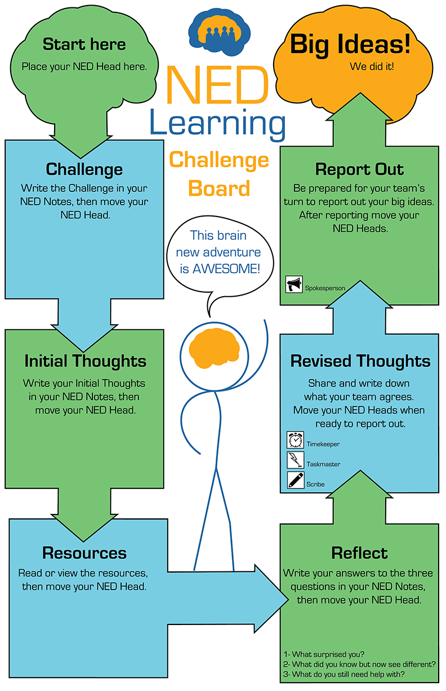
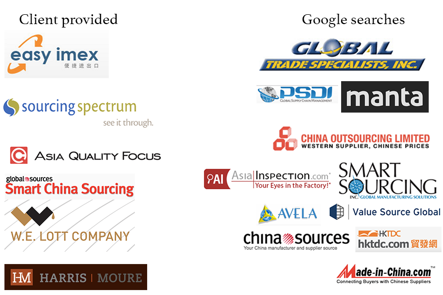
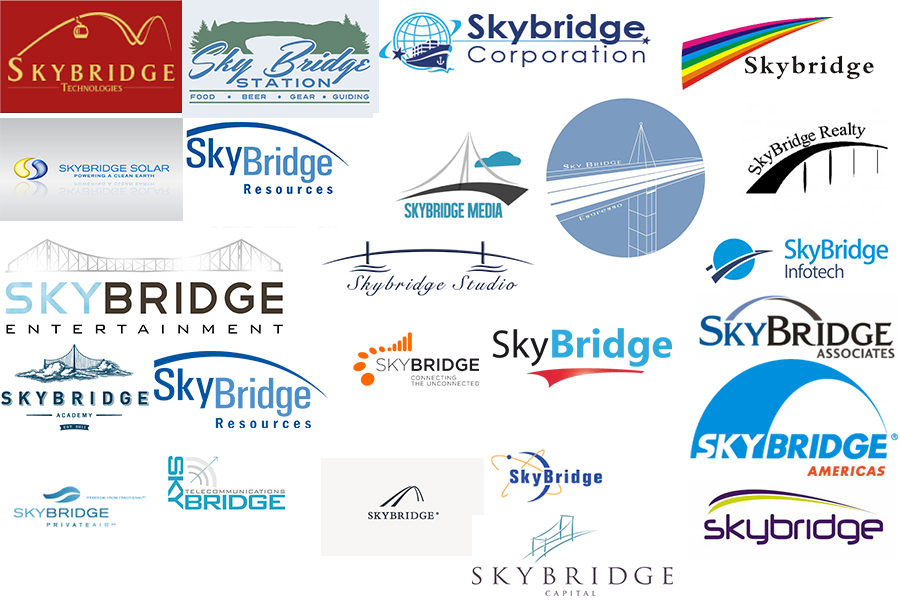
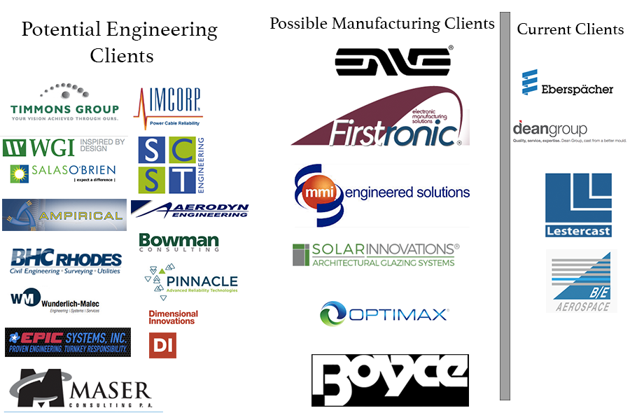
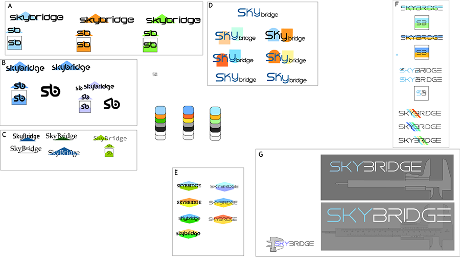
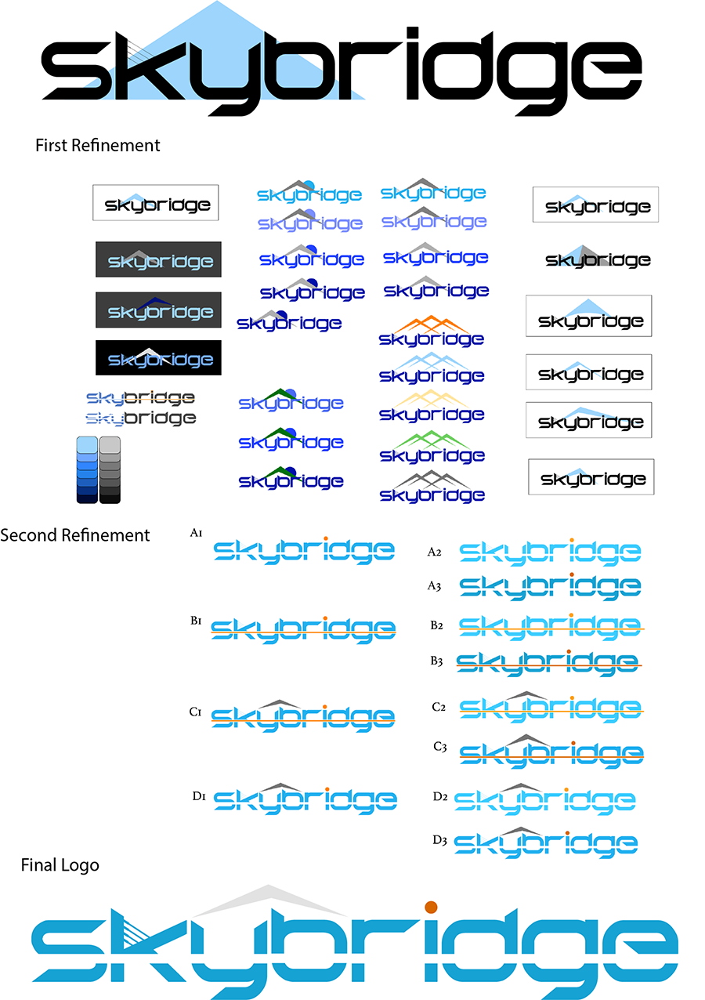
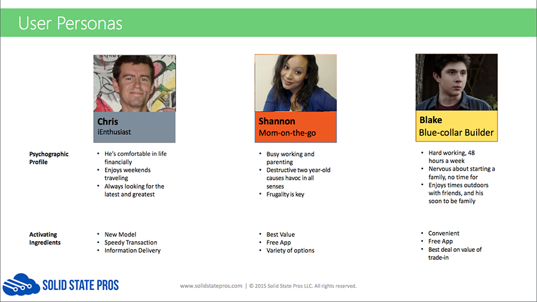
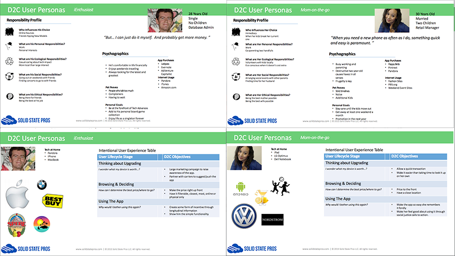
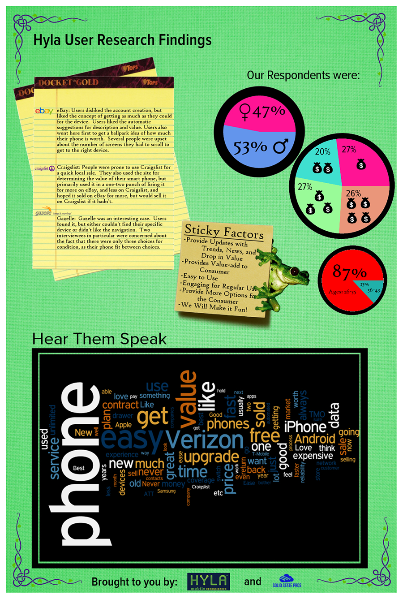

Adaptation is key to 21st century development and Agile is the philosophy that embraces this. Every project faces uncertainty due to budget, time, scope, and team. My experience has shown me that the Scrum methodology of having the whole team involved, regular iterative reviews, and constant innovation, produces a stronger product while mitigating the risk of scope creep and technological debt.
My ideal UX process includes these 6 steps: Data Collection (on-site visit preferable) - Personas - Ideation - Scenarios and User Stories - Paper Prototyping - Wireframing
My prefered tools: Adobe Suite; Photoshop, Illustrator, Experience Design, InDesign, Premiere, After Effects, and Audition
My best skills: Communication, Leadership, Confidence, Listening, and Empathy
During Startup Weekend here in Seattle where I meet a group looking to bring the Adaptive Learning Model to mainstream education. Adaptive Expertise is the cutting edge practice for teachers to get students fully engaged and active in their own learning while having a Neural Cognitive framework to guide one’s progress. The big challenge is getting it into classrooms in an easy to follow format with an eventual ED-Tech component.
Strategy, Creative Director, Brand Lead, UX Designer, Graphic Designer
First we went through a series of meetings to understand the program that Timothy Kieran O’Mahony (TKO) had been teaching for about five years. Stephen Morrissey (SM) and I went through the process, results, testing, feedback, and future plans that TKO had set.
TKO and his backers had originally planned to go with a SaaS offering and to start development in getting people engaged. As I looked at the plan I felt there was an important testing step and a much simpler (and affordable) paper version that would prove our concept and pave the way to a more Tech solution. A board game.
I facilitated a few branding meetings with the team and we came to Neural EDaptive as a working descriptive title including Neural, Education, and Adaptation. This branding changed slightly when NED the character was born.
The more we looked, the more we felt this was a perfect fit towards development, plus there would be a physical product for those unable to have or use tech in their classrooms. Taking TKO’s process for learning we developed the Challenge Board. The main idea is that it creates a time and place for the process in this way the learner can understand what stage in the process they are at. This is also a huge concern for UX development in apps and websites, when the user is empowered by understanding where they are they begin to trust the product more.
We tried a few different designs for NED and settled on leaving facial features off and focused on expressing moods and feelings through body language instead. So far this has been well received and having the viewer project their own feelings on NED makes him much more versatile.
We developed the first prototype and are now ready to test it in schools. Here is the digital version.

We also developed a stylized worksheet/scratch paper form to help guide students and give them an engaging way to record the information they needed to gather during the process. It pulls from the same styles as the board as to make it a cohesive and easy to follow guide.
This is where we are at right now and have teachers lining up to test this product out. We intend to get a lot of qualitative observational data to help with prototyping and start a quantitative baseline for some performance metrics down the road.
Skybridge came to us with an interesting challenge, they needed branding and a marketing site aimed at attracting small and medium size businesses in the tech sector who are looking for a manufacturing partner.
Brand Lead, UX Designer, Graphic Designer, and a Researcher.
We started with owner interviews to understand the business, culture, and goals that the company was looking to achieve. This gave us an idea of the vision, passion, and dreams behind their business. Here is where we started to understand the company’s identity. Some of this and the following research overlapped with research we were doing for the website.
Looking across the market and who was supplying who, we found out how others represented themselves, who stood out, and who was finding success. Asking the clients impressions on these was quite helpful as it helped us identify their preferences right away.

Next we looked at who was using the name Skybridge and what logo and styling designs to avoid. Also, we ended up validating the space for using the name Skybridge in that vertical.

Then we looked at who would be their ideal client from the stakeholder interview information about target company size, traction, and type of products. These brands and logos gave us an idea of what branding may be attractive to them, and some specific styles to avoid. We came up with a couple good groups representing the most upcoming companies that could need Skybridge’s services also comparing them to their current clients.

During all this research we kept track of the taglines and messages that other brands were using. This exploration helps us understand what messages were key and how Skybridge could stand out. This part of the research was especially important for understanding what the website should display. Here we had more interviews with the clients to discover.
Next we dove into the vast sea of fonts that exist to find something unique that resonates with the message we wanted. Modern, edgy, simple was often our clients’ motto and we definitely agree for the customers they wish to reach.
At this point we started considering what colors would distinguish Skybridge. We gravitated towards blue due to the Skybridge name and blue’s association with trust and knowledge.
In creating a logo we first did a series of different rough designs in order to find a path that spoke to the company’s identity. Use of all the previous research becomes apparent here as we explore designs that will embody and empower the brand. Using psychology about shapes, angles, and color the first logo drafts are born.

Following the initial creation we presented and received feedback from the clients over the course of 3 meetings both in person and remote. These meetings were key to the finishing process of the logo as many opinions played a part in the final decision. As you can see through the refinement process color choices emerged and stylizing became more refined.

In the end we developed an amazing logo that stands out in their marketplace. It embodies the messages the client wanted, a history of trust, an easy solution, and a longterm relationship. Both they and we feel this was accomplished by using the imagery of a mountain to symbolize history, a transparent stripe and a beacon to signify easy solutions, and bridge symbolism to signify a lasting relationship. Together these elements both resonated with the clients and speaks to the NW Tech Culture that they are reaching out too.
The strategy was to develop a simple marketing site that quickly informs the user of the value and offerings available and has straightforward calls to action. Was chose a few different templates that had high potential and the client helped pick the most appropriate. The blocks were then arranged to best display the company’s value while grabbing the viewer's interest.
In this step we finished out our research into how the industry represents itself, which was started alongside some of our earlier brand research. With this understanding we also needed the user’s perspective. Using surveys and previously published articles we discovered some of the prefered layouts for website engagement looking closely at where users would be interested in story, process, past work, team, and contact.
For this project we created 2 user personas wrapped around the potential client research that we had previously performed.
Next we did an ideation session looking at the different ways that these personas would interact and identify with the content in the website, the flow, and design.
After sketching out a couple scenarios we checked them against different layouts and calls to action within the website.
We did an AB test with a couple users that fit our personas having the website laid out in different flows.
At the end of the project we had a unique brand with an engaging website. Our clients were extremely happy and continue to get great customer feedback and responses.
Create a brand, logo, style guide, and 2 animated videos conveying value and explaining the product.
Branding, Graphic Designer, Media Production, Animator
Our first animation was focused on the value that vett.cloud provides to the user while captivating the audience.
Our second animation was focused on explaining what vett.cloud does for a user group in an easy to follow whiteboarding video.

Branding and UX Design for an app that facilitates an assessment diagnostic to determine the value of the phone while being simple and easy to use for the customer. This experience is currently frustrating and requires a good amount of time researching on the side of the consumer to get any real return on their device.
UX Researcher, UX Assistant, Brand Team Member, and QA Tester
First we held stakeholder interviews with company owners, product designers, and developers to understand what their goals and pain points were with their product. Their goal was to be the prefered avenue for the sale of used smartphones. Their market edge is the ability to better assess what a user’s phone is worth. Their secret sauce was the self diagnostic program their developers had designed. Their main pain point was creating an app that was thorough in its assessment of phone value while being simple and easy for the user to complete.
After this step we discovered that the task of selling one’s phone is often viewed as frustrating and pointless, due to the return, and that our experience needs provide an avenue of transformation in the user through stages of realization. Curious > Installed > Transactional > Evangelist is the transformation we wished to target with TrueTap users.
Next the research team pulled some of the main requirements together to get a good view of the target users that would use this. This took researching price points and assessing interest due to time and income. In the end we defined 3 robust personas that helped guide use through the rest of the process. Below are the personas we discovered and an example of the continued content under each.


Once we better defined our users we did surveys and interviews with our target demographic. This investigation was framed towards the present process of selling one’s phone. After a series of 12 interviews we had a good set of data to analyze. Upon analysis we soon discovered the pain points and presented our client with an infographic displaying our findings.

During our interviews and analysis, we also defined all the requirements and went through the process of validation with the stakeholders in order to make sure everything was being included and no extras popped up for confusion.
In this step we paralleled UX Design and Branding. The UX team worked on wireframing while the greater Branding team worked on name. I was lucky enough to be on both teams.
With the Branding team we referenced our previous research and personas to brainstorm a list of words that identified with the user, company, values, and processes involved with the App. We then went through various exercises to narrow these down to a solid set of 3 which were: True Coin, Gravy, and Copper. After a meeting with the clients and some stakeholders there was high interest in True Coin, which eventually led us to True Tap.
During this time the UX team built out wireframes and then a prototype.
Facilitate the branding and UX design for a digital services company
Branding, Graphic Designer, UX Designer, and Strategist
Produce a commercial for Epic meet that appeals to its key demographic using a limited budget for live action video.
Producer, Director, Editor, and Script Writer
Taking research done from branding and UX work done previously with this client we did an ideation session with our writing team to generate various directions we could take. We made sure to identify the values of the App we wished convey and the emotional tie users would have to the process.
Our writers then took those ideas and came back with a couple one page scripts. From these we decided which script had the most emotional impact while conveying the best message.
With the chosen script I made a storyboard addressing change of scenes, camera angles, and cadence.
After defining all the roles that would be needed and considering what the budget could support; I interviewed and hired the cinematographer, sound engineer, actors, makeup artist, and video editor. We looked at several locations and picked one that fit our needs perfectly.
Defining our characters, their costume, and physical needs I researched and purchased our production assets. I tasked my cinematographer with picking and renting the lenses and lights that he prefered which later the company reimbursed. I negotiated the times needed for the location and set the rest up. I also worked with the cinematographer to create a shot/scene list which we ended up using to the letter. I planned a one day shoot over an 12 hour period.
Production day went smooth and we were able to get every shot we wanted. Timing worked out great and no one was in a rush at any moment. I prefer this for my actors and employees, stress destroys concentration and innovative thinking. While directing I use a method that entails empathy and mimicry to help actors ease into their role. My ability to deliver all lines no matter the part is key for me to guide correctly and keep my actor comfortable. At the end of the day we had ever shot we wanted and extra footage for fill if needed.
In post I met with my editor a couple times a week and made sure everything was on track and on time. We had meetings over sound, music, effects, and filters. In the end I was pleased with his work. I also finalized budget costs and facilitated payroll.
At launch we added it in our marketing website.